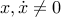
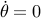

|
The video clip below demonstrates the LEGO crane, and the controller code that we just developed, in action. Note the amazing improvements the controller brings in dampening out the oscillations of the pendulum. As you can see, introducing the moving base instead of a tourque has a drawback, in that the base tends to drift away from its starting position. In fact, we have many possible solutions with  although , so the base might end up moving or coming to rest at a completely different position from where it started. The next, and final, tutorial page illustrates how we managed to eliminate this problem [continue »]. |